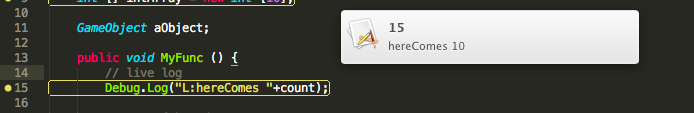

UnityのコードをSublimeTextで編集するAsset、販売中
概要
身内間でのみ出してたやつ、やっとUnityのAssetStoreに出せた(SublimeSocketAsset)ので、その他のものと合わせて、
SublimeTextでUnity、こんなに便利なんですよ！！ 的なまとめまでに。
機能的に「ここに乗ってないこの機構でもできるよ！」ってのは有ると思うんだけど、独断と偏見で比べてまだマシなほうを残していたりする。
判断基準は
・疎結合かどうか。強烈なパス依存とかがあるとドン引き。
・非同期かどうか。コンパイルの度にプチフリするIDEとかつらい。
あとショートカットとかはMac用で書いてある。
STにUnity C#のシンタックスハイライトを導入
C#で書いていても、Unity用のキーワードとか基底クラスを特別扱いしたい。
専用のシンタックスハイライトがあって便利。
Package Controlから入れると楽。
Command Palette -> package Control: Install Package -> Unity3D
UnityのAPIから補完
Unity C# Snippets
Command Palette -> package Control: Install Package -> Unity C# Snippets
時々、APIの情報が古いのか、パラメータの型情報が誤ったやつを出してくるのがあるけど、えらい捗る。
キーボードショートカットでコメントアウト/イン
コメントアウト&インを、command + / などのキーボードショートカットからなんとかしたくなるのが人情。
http://www.holoville.com/blog/?p=512
っていうかC#もできないので、そういう文化がない言語なんだな。
MonoDevelopにも無い。
いや良いけど。できるようになるので便利。
エラーとかの行をUnityコンソールからSublimeTextで開く
Unity editorでコンソールを表示した際、エラー内容をダブルクリックで対象の行に
フォーカスした状態でファイルを開く。
http://www.jacobpennock.com/Blog/?p=568
UnityHelperの話も出てるんだけど、個人的にはDashのほうが好き。
今後SublimeSocketAssetに積もうかなーと考えている。
STからUnityのドキュメントを開く
Dashと、
https://itunes.apple.com/jp/app/dash-docs-snippets/id458034879?mt=12
STからDashを起動するプラグイン
Command Palette -> package Control: Install Package -> DashDoc
の組み合わせが、異常に強力。
STでコードを書いている途中、補完が出力したAPIを選択した状態で
Command Palette -> DashDoc: invoke Dash with selected word(syntax-sensitive)
or
control + alt + h
STのシンタックスハイライトを見て、何が見たいか絞ってくれるので良い。

~ここからSublimeSocketAssetの独壇場~
SublimeSocketAsset
https://www.assetstore.unity3d.com/#/content/8003
STからUnityのコンパイルを行う
SublimeTextのビルドシステムを使ったものも有ったんだけど、パスとか密結合でめんどうだったので、SublimeSocketAssetで疎結合にした。
編集保存、即、コンパイル、が非同期にできるので、速い。
Unityから開いたファイル以外でもコンパイルターゲットにできる。つまりUnityのファイル監視機構に依存していない。
ST上にUnityのコンパイルエラーを出す
無かったので作った。下記エラーやWarningが発生した際、ST上にライブで表示される。 一部、SublimeSocketAsset 1.4.xから対応が増えるかもしれない。
対応しているエラーを無理矢理発生させたのが下の写真。各行左の丸いのをクリックすると詳細が表示される。

対応エラー一覧
Exception一般
以下に含まれないエラー一般。
Warning一般
unusedとか。
NullReferenceException
ぬるぽ。 ガッされてしまえ。
ArgumentException
いつ発生するのか忘れた。
You are trying to create a MonoBehaviour using the 'new' keyword.
MonoBehaviourなものを知らずnewしてると出る。実行時に検出される。エラーではないので止まりはしないが、コード上に表示されるようにした。
transform.position assign attempt for ~
Nullな要素のVector3をTransform.positionとかに代入しようとすると出るエラー。式算出とかだと出くわす。
UnityException
いつ発生するのか忘れた。
IndexOutOfRangeException
読んで字のごとく。
InvalidOperationException
いつ発生するのか忘れた。
特筆すべきは、NullなVectorをtransformに対してセットしてしまった時のレアーーーなエラーとか、UnityExceptionが実行時にコード上に直に表示されるところ。
捗るぞ。
ちなみにError/Warning表示はSublimeText自体のログにも出る。

InvalidOperationとかいつ出たんだか、、、本当に忘れた。
ほかにもエラーが有ったら教えてほしく。
これらのエラーは検出機構からして1ファイルで設定/拡張可能にしてあるので、自前でエラーを定義してアクションを追加したりできる。
ST上にUnityの動作中のパラメータを出す
無かったので作った。
特定のDebug.Log形式でパラメータをST上に表示できる。
複雑な条件の中に入ったかどうかとか、ログに特徴的な事を書いてUnityのコンソールから探す、とかするのシンドイので、通ったところが光るのが重宝する。
Debug.Logの中身をL: から始めるだけ。

今後のやる気
独自型の補完を出す
1.5.xには入れられると思う。
エラーのQuickFixを出す
ST3から導入できる。強力。
Windows版
ST3の正式版が出たら、Windows版に対応。
でもWinの人はVS使えば良いと思うが。
STからのUnity editor Play
やりたい。
次のエラー行へのジャンプ
いちいちUnityのコンソールを経由するのが面倒なので、
キーバインドかなにかで次のエラーがあるファイル/行を表示するとかしたい。
コード上への負荷表示
コード間の時間的負荷を、コード上に表示したい。
などなど。
そんなわけで、宣伝だった。